| 日付 | 2010年4月29日（木） - 2010年4月30日（金） | ||||
|---|---|---|---|---|---|
| 山域 | 奥秩父 | ||||
| メンバー | 単独 | ||||
| 山行形態 | 1泊2日テント泊 | ||||
| アクセス | 電車、バス | ||||
| ルート (Map) |
|
2日目
昨夜もう1張テントが現れ、昨晩のテントは計2張だった。
5:48 将監小屋を出発する。
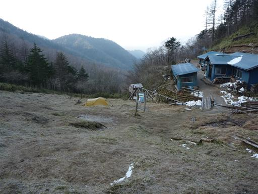
小屋前の急な坂を登っていく。この季節は日が長いので、もう十分に明るい。
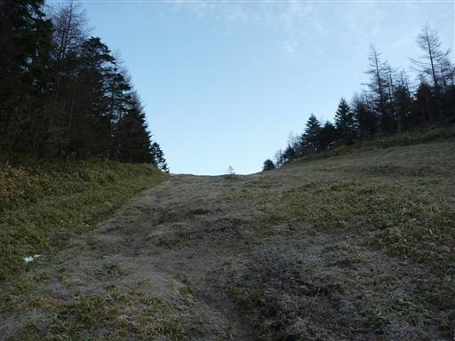
将監峠に到着する。ここからまた、しばらくは奥秩父主脈縦走路を歩く。
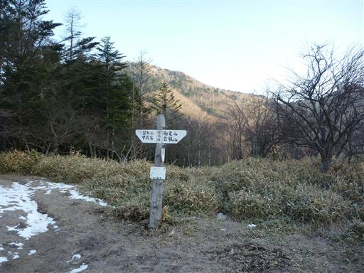
少しだけ雪が残る明るい尾根道を歩いていく。朝はまだ雪が堅いので歩きやすい。
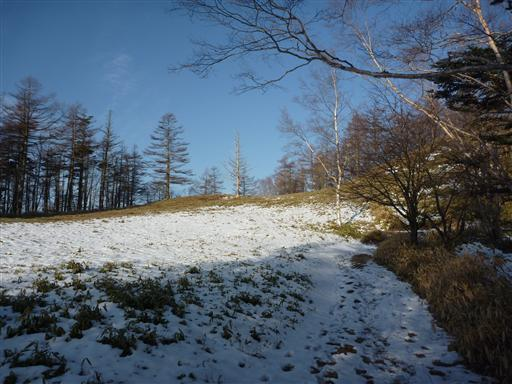
奥秩父主脈縦走路と和名倉山との分岐点に到着。
縦走路はここから唐松尾山、笠取山を越えて甲武信ヶ岳に続いている。
こちらの道もいつかたどってみたい道だ。
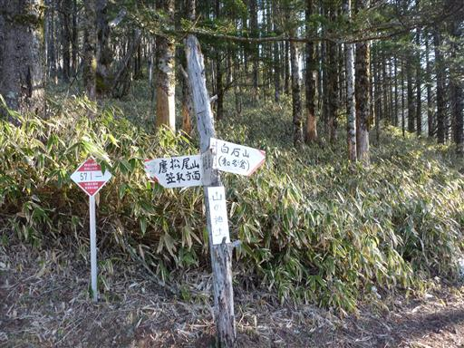
この辺りは尾根道の他に巻道も用意されている。「ガチ用」「ヘタレ用」との落書きがある。
巻道は唐松尾山も笠取山も通らないので確かにヘタレ用だ。
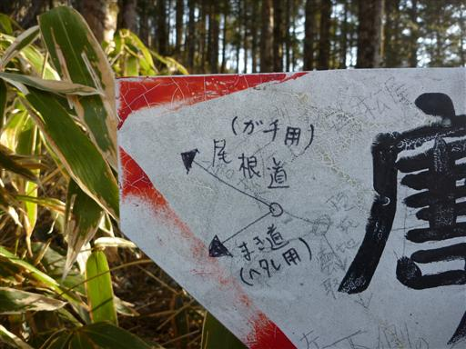
和名倉山への道に踏み込む。比較的マイナーな山らしいが、雪の上に足跡はある。
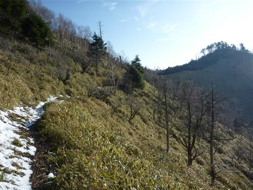
まばらに木が生える尾根道は非常に展望が良い。今日は快晴だ。
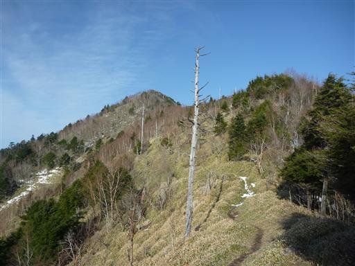
西の方には甲武信ヶ岳や国師ヶ岳を望むことができる。
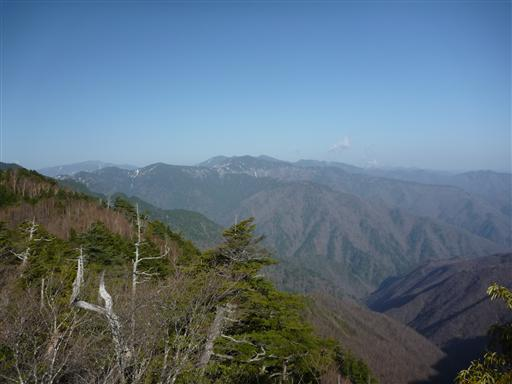
稜線の先に和名倉山が現れる。つかみどころのない馬鹿でかい山だ。
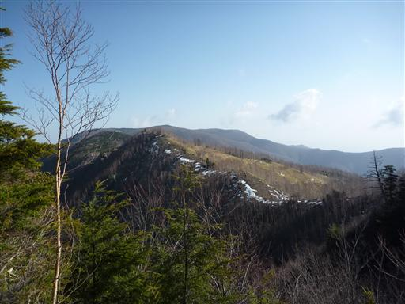
東仙波山頂に到着。ここまで来れば和名倉山まで余りアップダウンはない。
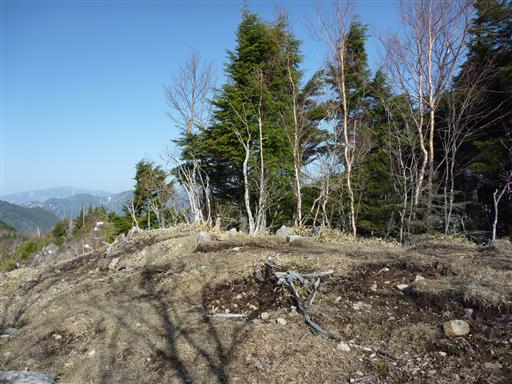
振り返ると歩いてきた稜線の向うに、唐松尾山の姿が望める。
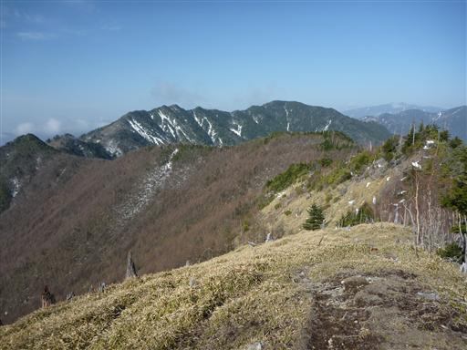
ここから先は昔山火事があったところで、少々山が荒れている。
展望は非常によいが、道は少し分かりにくい。
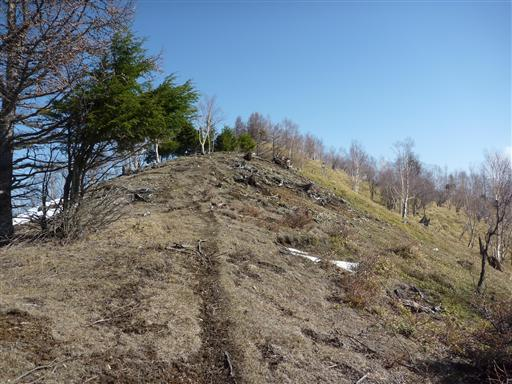
登山道脇に多くのワイヤーが放置されている。森林伐採に使用したものだろう。
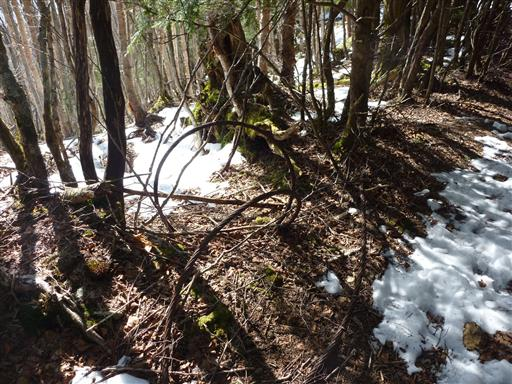
2本の木が仲良く折れている。
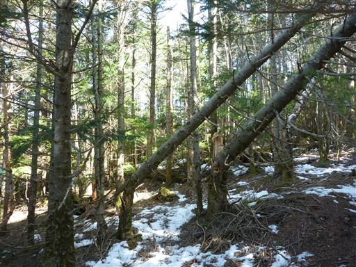
倒木だらけの尾根道。尾根は広いので、かわしながら進んでいく。

二瀬分岐に到着する。ここから和名倉山を往復する。
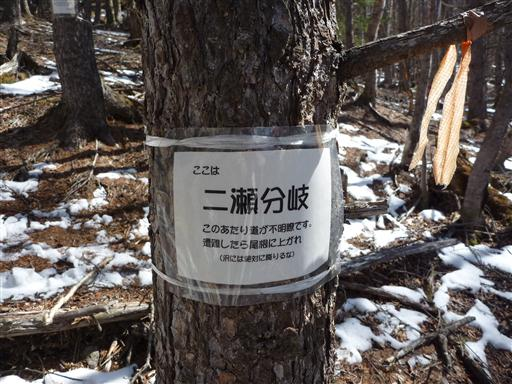
二瀬分岐にある張り紙。「ここまで来ていまさらですが… 家族に伝えたか？」と書かれている。
おっしゃる通り、ここまで来ていまさらだ…
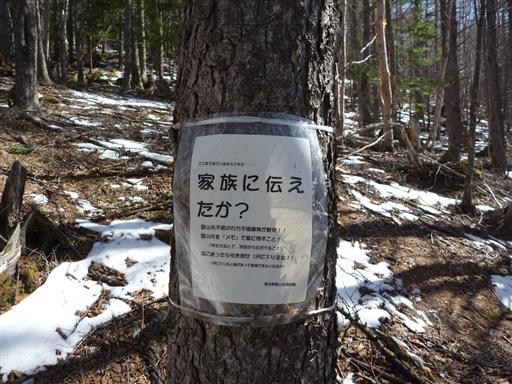
山頂付近はとにかく広い。山頂標識のあるピークまで、だらだらと続く道を歩く。
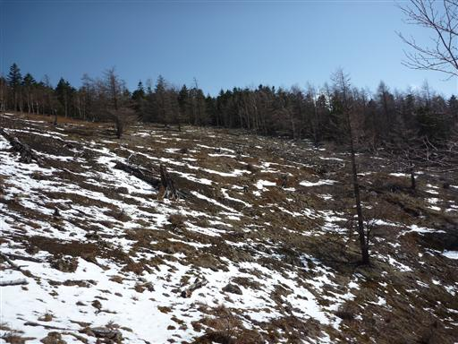
倒木から何かが生えている。コケ類か地衣類かの何かだろう。
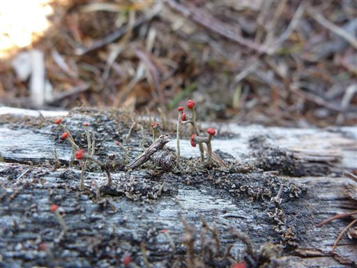
9:04 和名倉山山頂到着。標高2036m。
白石山とも呼ばれるが、和名倉山の方が通りが良い。
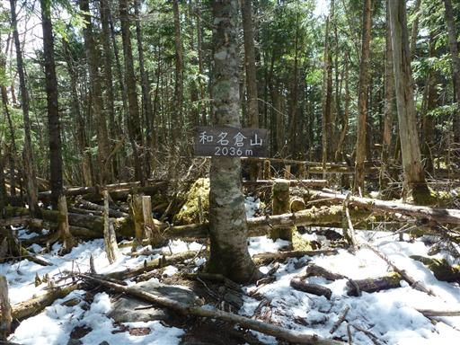
樹林に囲まれた静かな山頂で展望は全くない。
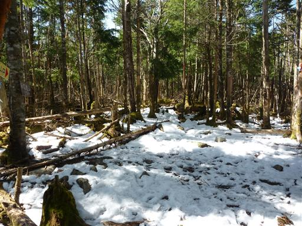
なんと救助隊が取り付けた山頂標識がある。
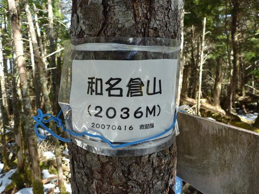
山頂でしばらく休憩した後、二瀬分岐まで戻る。続けざまに3パーティとすれ違う。
それなりにこの山に登る人はいるようだ。
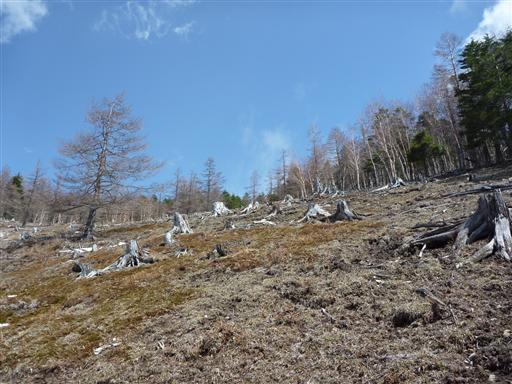
ほとんどの人は将監小屋から和名倉山の往復だが、
二瀬分岐から北の秩父湖に伸びるマイナーなルートがある。
今回はこのルートを下山する予定だ。遭難者が多いルートなので気合を入れる。
辺りはシラビソの美しい樹林帯だ。

しばらく歩くと雰囲気ががらりと変わりアセビが多くなる。
雪の上には一人分の足跡が残っている。何日か前に歩いた人はいるようだ。
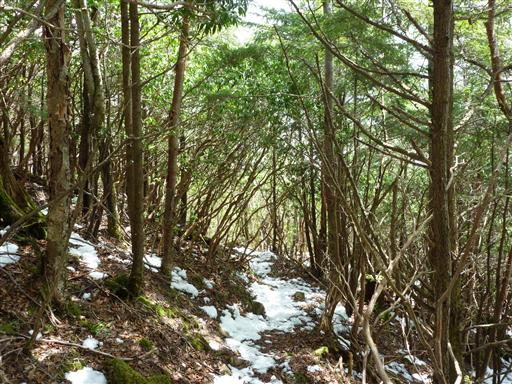
道が分かりにくいところには「立入禁止」のテープが張られている。
遭難が多くて有名ということは、逆にそれなりに整備されるということか。
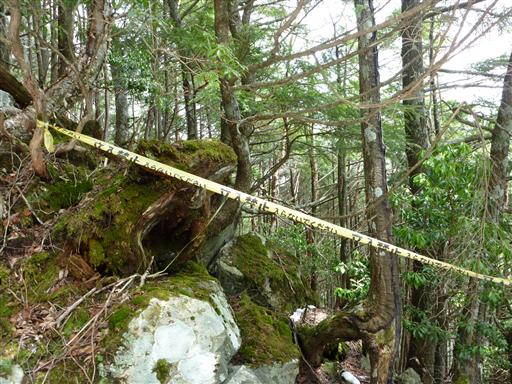
「この先、スズタケのヤブ。遭難多し！」
このルートは笹薮が酷いと聞いていたが、ようやく笹のお出ましのようだ。
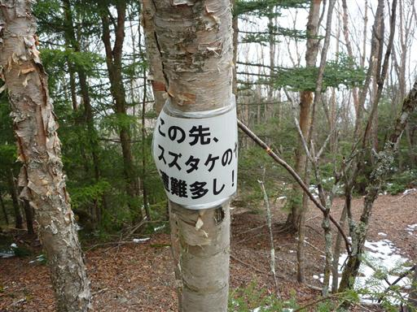
空を見ると、先ほどまであれほど青空が広がっていたのに真白になっている。

スズタケのヤブが始まる。と言っても、道は完璧にできていて困難なところはない。
夏になるともっと繁茂するのだろうが、昨年の同時期に行った南ア深南部に比べるとはるかに楽だ。
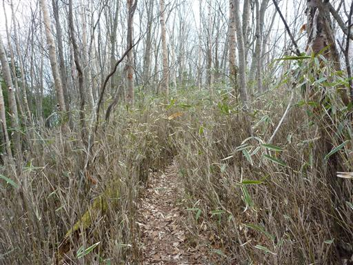
笹薮は30分ほどで終わる。登山道はここから稜線を外れ、急な坂道を一直線に下っていく。
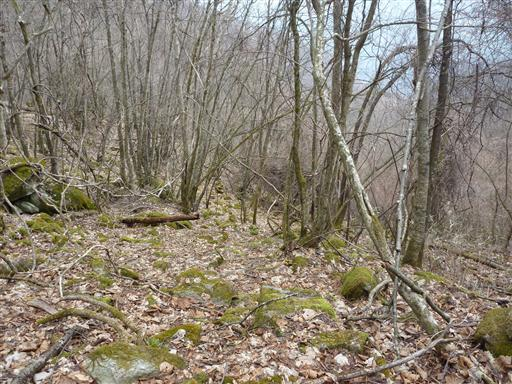
小さな沢を渡る。登りの人にとっては貴重な水場だ。
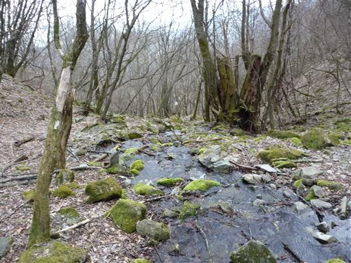
沢の付近に造林小屋跡がある。50年ほど前に使われていたものだが、今は見る影もない。
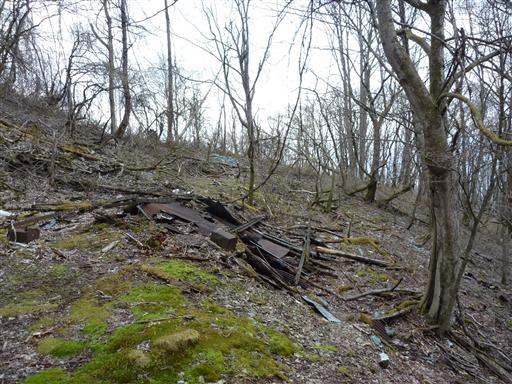
辺りは酒瓶が無数に散乱している。誰か片付ける人はいないのだろうか？
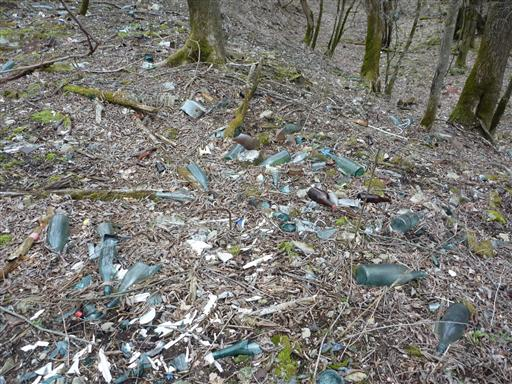
伐採した木を運ぶためのものだろうか？レールが残っている。
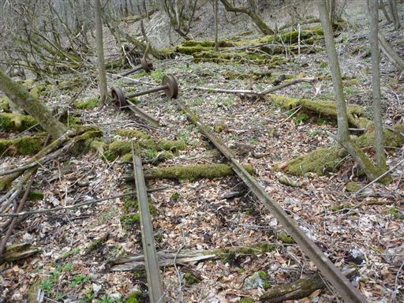
道端にコガネネコノメソウが咲いている。地味な花だ。
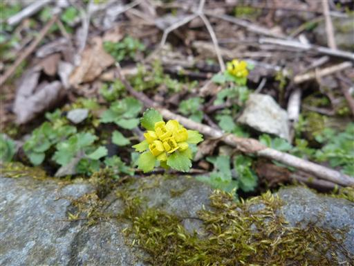
ここから先は森林軌道跡を歩く。登山道が山の稜線についていないのは、
この道を利用するためだったのか…
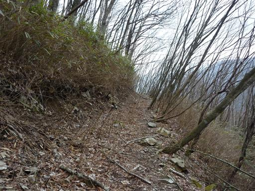
道は広いが整備はされていないので、決して歩きやすくはない。
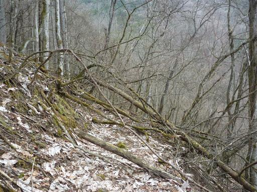
道端に咲くハシリドコロの花。猛毒植物として有名だ。花も不気味で可愛らしさがない。
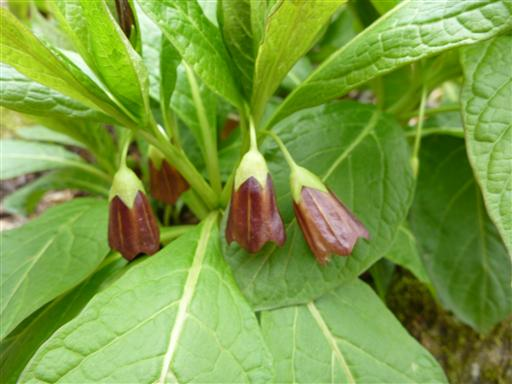
登尾沢ノ頭に到着。標高1369m。
山頂標識があるが、本当の山頂は少し斜面を登ったところにある。
斜面を登って三角点を探してみたが見つからなかった。
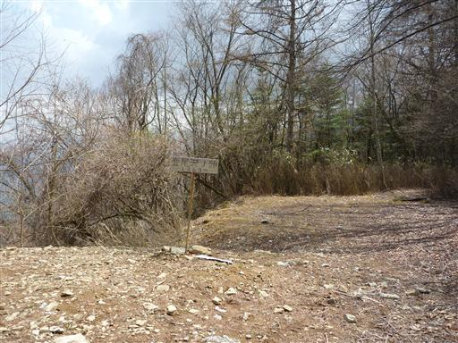
ここから先は急な尾根道。植林地帯が現れ、道もはっきりしている。もう迷うことはなさそうだ。
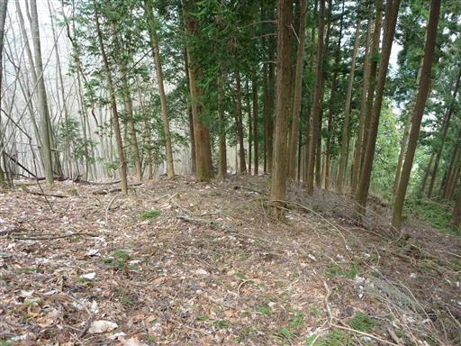
秩父湖にかかる吊橋に到着。
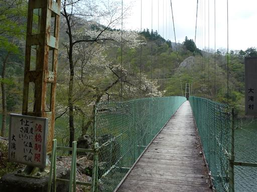
吊橋からの景色はすばらしい。
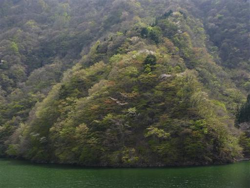
山の上は雪だったが下界は今が新緑真盛りだ。
黄緑色の葉の中に所々桜が混ざっている。
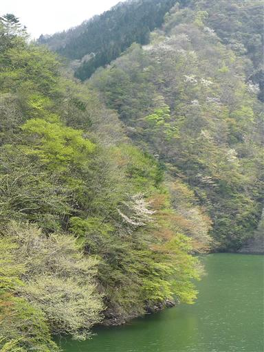
車道を歩いて二瀬ダムに到着。
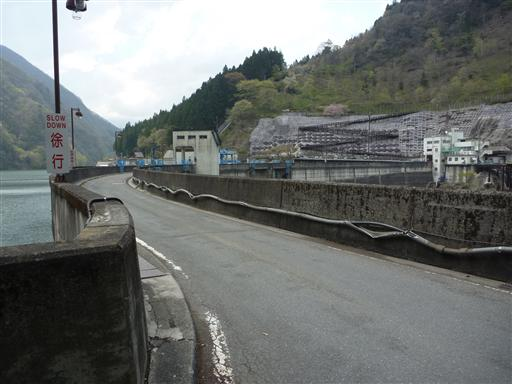
秩父湖はさほど大きくないが、ダムの大きさはなかなかのものだ。
ものすごい勢いで放水している。この水は荒川を通って東京湾に注ぐ。
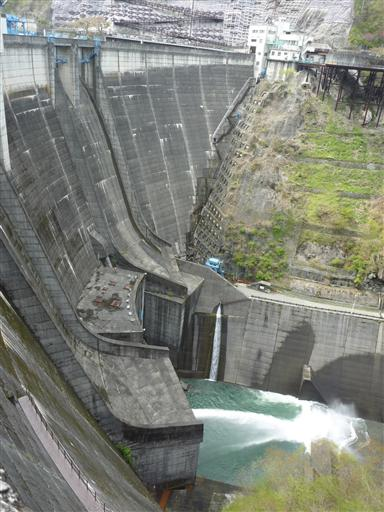
13:58 秩父湖バス停到着。標高550m。
道迷いが多いと言われる和名倉山、登り下りとも分かりにくいところはいくらかあったが、
全般的に登山道は整備されていた。
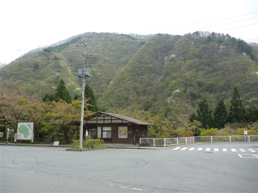